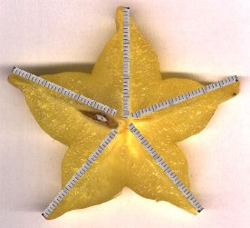
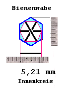
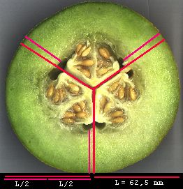

Die Quantisierung in den Strukturen der Früchte
von Dipl.Phys. G.Müller
Kohlenwasserstoffresonanz als Formgeber
Viele Beispiele in Bildern
Javascripte
Die Frchte einer Sorte sind hufig verschieden gro - von auen. Aber
die relevanten 'inneren Organe' haben eine Volumen-Quantisierung. Wenn
bei groen Frchten die nchste Gre noch nicht hineinpat, dann nimmt
die Anzahl der 'Organe' erst einmal zu. Die Lcken werden mit Fruchtfleisch
bzw. Eiwei gefllt. So ist das gut zu beobachten bei Tomaten,
oder im Ei bilden sich zwei Eidotter statt ein doppelt so groes, denn
dieses htte ein achtfaches Volumen, kein zweifaches wie zwei Dotter in
einem Ei.
Denken Sie zum Beispiel an Apfelkerne/Birnenkerne. Diese haben Stromlinienprofil,
als mten sie sich einer Strmung entgegenwerfen. Auch die Frucht selbst
ist oft so gebaut. Wenn eine Birne mit dem Stiel am Baum hngt, dann bekommt
sie von oben das Licht, das in den Kegel absorbiert wird und das ber
Reflexion im unteren (Halbkugel-)Hohlspiegel in das Kerngehuse gelangt
und dort die Zirkularströmung und die Gegenströmung ausbildet.
Die Anordnung der Kerne ist extrem optimiert, fr genau diesen Vorgang.
Auch andere Fruchtsorten zeigen, daß diese innere Strömung
vorhanden zu sein scheint, aus was und von wo auch immer (evtl.unten oder
seitlich).
Zurück zur Birne. Es müssen am harten Kern der Frucht auch
die Bernoulli-Kräfte wie am Tragflügel wirken, die ihn periodisch
gegen das harte Kerngehäuse schlagen lassen, was wiederum ein neues
Signal in der Birne
erzeugt und eine Energiewandlung bedeutet.
Ist die Birne schief, bekommt nur ein Kernfach diese Energie, die anderen
Kerne sind dnn und verkmmert. Grund dafür ist, daß sich nicht
jede beliebige Stehwelle in der Birne ausbildet, sonden nur eine Resonanzwellenlänge
für Wasser, bzw. die dreifache für Kohlenstoff.
Die Lage der Samenkerne hat im Rahmen der Bandbreite der eigenen Dicke
diesen schnell auffindbaren Wasser- oder Kohlenstoff-Resonanz-Abstand
zur Fruchtoberfläche. Ist die Frucht so extrem asymmetrisch, daß
für eine übliche Kernposition dieser Abstand von keiner Stelle
der Oberfläche aus erreicht werden kann, dann befindet sich dort
auch kein Kern, das Fach ist leer. Die Frucht kann auch vollkommen kernlos
sein, wie wir es von bestimmten Züchtungen (in Übergröße)
kennnen. Sehr große Kerne dagengen aber haben große Segmente
des Schalen-Hohlspiegels passend für sich, als C-Wellen-Empfänger
im Brennpunkt.
Diesen Test kann jeder bei der nächstbesten schiefen Frucht (etwa
Birne oder Apfel) machen: Im Querschnitt an der dicksten Stelle aufschneiden.
Dann nach dem C-Resonanzabstand 31,2 mm des größten Kernes
suchen, in Richtung Rand der Frucht.
|
Je größer der passende Sektor, desto größer
der Kern. Auf der nicht passenden Gegenseite sind die Kerne klein,
dünn und verkümmert oder fehlen.
Bild: Sternfrucht (Karambole). Vier Sternspitzen sind zu kurz,
um den Kern an der Wurzel mit der C-Resonanzlänge zu treffen.
Dort gibt es keinen Kern.
mehr (siehe ganz unten)
|
 |
Konzert des Lebens
Zwar hat das Resonanzgesetz der Elemente noch kein Gehr in den "anerkannten
wissenschaftlichen Kreisen" gefunden, aber das strt die Tomaten nicht.
Auch die Melonen und die übrigen Pflanzen dieser Welt wissen Bescheid
darber. Sogar unser Knochenbau, jedenfalls der unserer Vorfahren, die
noch in Einheit mit der Natur lebten: Ihre Elle wurde spter zum Viertelmeter.
Die Pflanzen und wir bestehen selbst aus Kohlenstoff. Und weil das so
ist, nutzen sie ihn auch. Jedes Atom scheint etwas 'auszudnsten'. Ich
werde immer gefragt: "Ist es elektromagnetisch ?". Ich wei es nicht,
tippe aber auf eine kombinierte Schwingung des Äthers, die in bestimmten
Richtungen auch als longitudinale Druckschwankung gesehen werden kann.
Es ist auf jeden Fall eine ordnende Schwingung, auf die thermodynamische
Begriffe schlecht anwendbar sind. Als Vergleichsbild sollte man sich eine
laminare turbulenzfreie Strömung vorstellen, die sich im Inneren
der Pflanzen ausbildet, und für deren Schutz und Transport die Pflanze
mit ihrem Aufbau sorgt. Die biologischen Zellen und Organellen sind Antennen
für natürliche Schwingungen der Umwelt und ihres eigenen Baustoffes.
Der Organismus wächst hinein in brauchbare stehende Wellen, ummantelt
diese mit Biosubstanz und verstärkt sie somit, um sie als Quelle
von Energie zu behalten.
Die materiellen Stoffe dnsten also 'etwas von sich' aus, eine Vibration,
eine Schwingung, die fr jedes Element eine andere Wellenlnge hat. Jede
Grundschwingung hat viele viele Subharmonische, bis hinauf in unsere Lngeneinheiten,
wie Mikrometer, Millimeter, Zentimeter, Meter usw. . Lebendige Organismen
nutzen dann diese Wellen, die auch aus ihrem eigenen Inneren kommen, indem
sie hineinwachsen, um Energie zu schpfen.
Leben ist nichts Mystisches, es ist Geometrie plus Dynamik plus gespeicherte
Information. Diese Resonanzstellen sind einfach Potentialtpfe, in die
ein vorbeikommenden Molekl hineinfllt. Ist dann eine Verdichtung entstanden,
avanciert sie gleichermaen zur Quelle neuer Elementarschwingungen und
kreiert eigene Untersysteme. Dazu braucht es wenig DNS, aber sie ist eben
der Anfang. Sie ist die Partitur. Das Klavier und der Spieler sind einfach
der Raum und die fluktuierende Energie drumherum, der auf dynamischem
Wege zur Ordnung verholfen wird. Das Anordnen in resonanten Punkten/-linien/-flchen
geschieht schon weit vor den uns bekannten biologischen Mikroskalen. Es
geschieht zum Beispiel auch im Kristall. Nur so kann die Mikro-Ordnung
noch in der Makro-Ordnung ankommen, können die Subharmonischen weitergereicht
werden über viele Ebenen. Der Durchgriff von oben nach unten ist
ebenso wahrscheinlich wie umgekehrt. Da knnten Sterne und Galaxien sich
entlang von Elementar-Skalarwellen anordnen, die das 2^N-System als 'Eltern'
tragen, das heit es liee sich dort auch ein Periodensystem der Elemente
finden, bzw. wre unseres nur deren Miniatur-Spiegelung.
Das Compton-Hierarchiegesetz der Elemente
Gefunden wurde das Gesetz von Frithjof Michael Mller vor inzwischen 14
Jahren an Materialdiffusionswellen beim Sprengschweien. Alle Anwendungen
waren bisher technischer Art. Es konnte auch eine sehr genaue Übereinstimmung
zu den Kristallgitterkonstanten der Elemente (Z=11,
14, 44, 55) gefunden werden. Erst krzlich gingen mir die Compton-Augen
auf - hinsichtlich von Frchten und Samen.
Resonanzlnge L = Z * Ce * 2^N
|
Die Resonanz-Frequenz ist entsprechend f = c / L.
N ganze Zahl
Z = Kernladungszahl des Elementes
Ce = h/(mc) Comptonwellenlänge
h = Plancksches Wirkungsquantum
m = Elektronenmasse
c = Lichtgeschwindigkeit
Kohlenstoffresonant ist die Lnge für Z=6 und zum Beispiel N=36
L=6*Ce*2^36= 1000,326 mm (fast ein Meter, viermal die menschliche Elle)
oder die Hlfte: 500,163 oder die Hlfte: 250,082 mm oder die Hlfte:
125,04 mm oder die Hlfte: 62,5 mm oder die Hlfte: 31,3 mm oder die Hlfte:
15,6 mm usw.. Fr Wasserstoff mu man diese Gren durch 6 teilen, also
166,7 mm, 83,4 mm, 41,7 mm, 20,8 mm, 10,4 mm, 5,2 mm, 2,6 mm .
Schon an der Gleichung sieht man, da 1/3 einer Kohlenstoffresonanzlnge
(Z=6) automatisch eine doppelte Wasserstoffresonanzlnge (Z=1) ist und
damit natrlich auch für Helium (Z=2), Sauerstoff (Z=8), Germanium
(Z=32)... Umgekehrt nicht. Aber das Dreifache einer Wasserstofflnge wird
automatisch zur Kohlenstofflnge. Hexagonal- und Trigonalstrukturen sind
hufig in der Natur zu finden.
Bienenwaben
Das Dreifache einer jeden Frequenz ist das Gleiche wie die Summe zweier
benachbarter Oktavfrequenzen. Diese neue Welle pat dreimal in die groe
Wellenlnge und ist 4/3 so gro wie die kleinere Oktavwellenlnge - eine
wichtige Bedingung fr die Bildung von geschlossenen Raumkurven ('Torkado',
2D-Darstellung 2/3,
3/4).
Interessante Versuche von Bienenzchtern,
die Wabengren zu verndern: um grere (mehr Ertrag pro Biene) oder
kleinere (vitalere) Bienen zu bekommen, brachten z.B. zwar grere Bienen,
aber kleinere Vlker und die inneren Organe der Bienen waren nicht mit
vergrert. (Ich erinnere hier an die Fleischtomate.) Weiter unten im
Bienen-Text werden historische Messungen an Wabengren gezeigt: Der mittlere
Innendurchmesser liegt durchaus bei 5,2 mm, das wre haargenau Wasserstoffresonanz,
und damit ist der Umfang automatisch Kohlenstoffresonanz.
Und dies sind Durchschnittszahlen von 850 Zellen, also eine wunderbare
Vorarbeit in Sachen Statistik, die bei den Frchten noch vllig fehlt.
H-Resonanzlänge : 1*Ce*2^31= 5,21 mm
C-Resonanzlänge : 6*Ce*2^31= 31,26 mm |
 |
Man kann in der Zeichnung sehen, da zwischen gegenberliegenden (dunkelblauen)
Wabenwnden der Abstand 5,21 mm besteht, also die Wasserstoffresonanz
(N=31).
Der kohlenstoffresonante Umfang (rote Linie) liegt aber weiter innen,
innerhalb der Larve, sie mu sich ja auch drehen knnen, kann also die
Ecken der Wabe nicht ausfllen, wohl aber das 'Fruchtwasser' kann es.
Erythrozyten
Fr Eisen gilt L=26*Ce*2^17=0,0082678 mm. Das ist genau der Durchmesser
eines gesunden lebendigen Erythrozyten
- offenbar verursacht vom Eisenatom des Hämoglobins.
Oder wird damit das Eisenatom eingefangen ? Oder gefangen gehalten ? Zu
kleine Erys (kranke, junge) sind nicht funktionsfhig. Zu groe mssen
sterben: Wenn sie aus der Resonanz wachsen, ist ihre Lebenszeit zuende.
Volumen der Samen
Wirklich keimfähige Samen haben als Sorte meistens ein durchschnittliches
H-Resonanzvolumen aus einer der Größen:
36,204 / 18,102 / 9,051 / 4,525 / 2,263 / 1,131 / 0,5657 / 0,2828 / 0,1414
/ 0,0707 / 0,03535 / 0,0177 in Milliliter
( Berechnung aus (41,68 mm)^3= 72408,73 mm^3 = 72,409 ml )
Ermittelte Werte:
Stangenbohnen weiß 100 Stck.28 ml --> 28/100= 0,28 ml
Stangenbohnen "Neckarkönigin" 180 Stck.50,5 ml --> 50,5/180=
0,28 ml
Weizenkrner 400 Stck. 14.5 ml --> 14.5/400= 0,036 ml
Roggenkrner 300 Stck. 5.5 ml --> 5,5/300= 0,018 ml
Dinkel, schnell kochend 200 Stck. 6,7 ml --> 6.7/200= 0,034 ml
Naturreis, Mittelkorn 200 Stck. 3,6 ml --> 3.6/200= 0,018 ml
Kichererbsen 100 Stck. 28 ml --> 28/100= 0,28 ml
Bilder der Samen
Man fragt sich, wieso ein wasserloser Samen ausgerechnet ein Wasserstoff-Sauerstoff-Resonanzvolumen
hat. Es könnte die einfache Protonenresonanz sein, auf die immer
alles passen muß, oder es hat einen praktischen Sinn:
Ein Wasser-Resonanzvolumen erzeugt eine (ther)Strmung fr dieses Element
um das Volumen herum. Diese Strmung fließt turbulenzarm und vor
allem parallel zur Samen-Oberflche, und Wasser aus der Luft wird in die
Strmung (das ist seine Frequenz!) resonant hineingezogen, vorbei am Samen
sozusagen.
Das Samenkorn war nicht immer trocken. Es ist getrocknet worden in einem
Hohlraum aus Kohlenstoffwänden, der früher Wasser trug, jetzt
leer ist, aber noch Wasservolumen hat. Dieser Hohlraum entzieht dem Samen
das restliche Wasser, dieser schrumpft, bis er passend ist für diesen
Hohlraum. ( halbe Größe oder viertel, oder achtel) und trocknet
fortan sich selbst, obwohl er aus Kohlenstoff besteht. Es sei denn, die
Zeiten ndern sich (+weiterer Reiz) und Wasser ist wieder willkommen.(Beispiel
Honigmelone saftig und vertrocknet
).
Es spielt brigens keine Rolle, woraus ein fertiger Resonator besteht.
Fr seine aktuelle Hauptschwingung ist ausschlielich die Gre zuständig
Für Jedermann: Einfache Messungen an schiefen Birnen und Äpfeln
Es geht nicht um Treffer-Intervalle für die Abstandsgrößen
eines Kernes von der Schale, sondern um Treffer-Punkte. Fr Birnen- oder
Apfelkerne drften die Resonanzlängen 31,2 mm oder 15,6 mm (Minifrüchte)
zutreffen, denn Riesen mit einem Radius knapp über 62,5 mm gibt es
wohl eher nicht. Wenn also nur eine einzige Strecke "Oberfläche
<--> Kern" in der 3D-Frucht diese Länge hat (etwa in einem
beliebigen Ellipsoid), dann knnte sich theoretisch der Kern bilden, aber
nicht praktisch. Es mu viel mehr Oberflächen-Energie beim Kern ankommen.
Die Apfelschale mu quasi als Hohlspiegel viele Strahlen auf den Kern
fokussieren. Es gibt immer Schnittebenen, die das nachmebar zeigen, wenn
der Kern vorhanden ist. Bei einem Riesenkern oder Doppelkern findet man
die richtige Länge schnell in vielen Schnittebenen. Die andere Seite
der schiefen Frucht hat dann automatisch weniger oder keine Resonanz,
die Oberflächenabstandswellen mit C-Größe treffen ins
Fruchtfleisch, der Kern ist verkümmert oder fehlt ganz.
Wenn Gegenbeweise vorgelegt werden sollen (ich konnte noch keine finden),
dann mu sichergestellt sein, da nicht eine vollkommen falsche Schnittebene
genommen wurde. Eine solche Frucht sollte von drei Seiten gescannt werden,
damit man eine Vorstellung von ihrer richtigen Form hat.
Viel Spaß beim Entdecken !

Galiamelone
|
{kind=link}